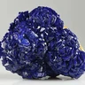
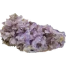
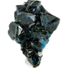
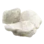
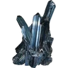

Correspondence Grimoire
Wisdom

AzuriteBanded Agate
Creedite
Lazulite
Snow Quartz
StibniteStillbiteWisdom is the deep understanding that comes from experience, reflection, and a willingness to see beyond surface appearances. In magickal practice, wisdom differs from knowledge. Knowledge is the accumulation of facts and information. Wisdom is knowing how and when to apply that knowledge with discernment and compassion.
Understanding Wisdom as a Correspondence
Wisdom connects to Knowledge, Guidance, and Meditation. While Knowledge focuses on learning and acquiring information, Wisdom speaks to the integration of that information into lived understanding. It is the quality that helps you make sound decisions, read situations clearly, and offer counsel that truly serves.
Many traditions associate Wisdom with the crone archetype, the elder who has walked a long path and carries the lessons of every step. Working with Wisdom as a correspondence invites that elder energy into your practice regardless of your age.
Working with Wisdom Magick
Wisdom magick tends to be contemplative and receptive rather than forceful. It asks you to slow down, listen, and observe before acting.
Practical Approaches
- Meditation and contemplation: Sit with a question rather than rushing to answer it. Allow insight to arrive in its own time.
- Journaling: Write about your experiences, your mistakes, and the lessons they carry. The act of writing often reveals understanding you did not know you had.
- Dream work: Ask for guidance before sleep and record the messages you receive upon waking.
- Studying sacred texts and symbols: Engage with the deeper layers of your craft through research and reflection.
Common Tools and Materials
- Purple candles for spiritual wisdom and higher understanding
- Blue candles for clarity of thought and truthful communication
- Sage for purification and the clearing of mental fog
- Rosemary for memory, mental clarity, and focus
- Lapis Lazuli for accessing deep inner truth
- Amethyst for spiritual insight and connection to higher wisdom
- Sodalite for rational thought and intellectual understanding
- Fluorite for mental organization and discernment
- Owl imagery or feathers as symbols of wisdom across many traditions
Timing Your Wisdom Workings
Moon Phase
Wisdom workings are effective during a full moon, when clarity and illumination are at their peak. The waning moon supports introspective wisdom work, helping you process lessons and release what no longer serves.
Days of the Week
- Wednesday (Mercury's day): Supports learning, communication, and intellectual pursuits
- Thursday (Jupiter's day): Supports expansion of understanding and philosophical insight
- Saturday (Saturn's day): Supports discipline, patience, and the wisdom that comes from endurance
Cultivating Wisdom Over Time
Wisdom cannot be rushed or forced. It grows through honest self reflection, a willingness to learn from mistakes, and the humility to recognize how much you still do not know. The wisest practitioners are often the ones who ask the most questions and hold their conclusions lightly.
Trust that every experience, pleasant or difficult, carries a lesson. Your practice itself is one of the greatest teachers you will ever have.